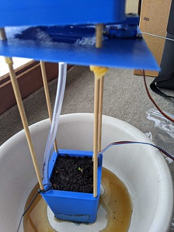
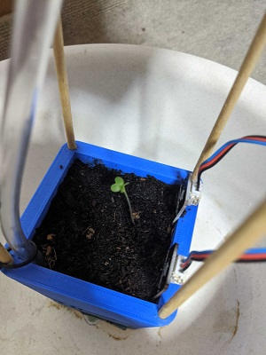
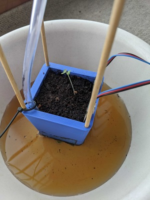
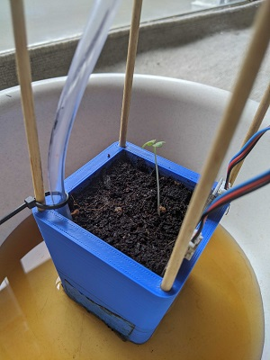
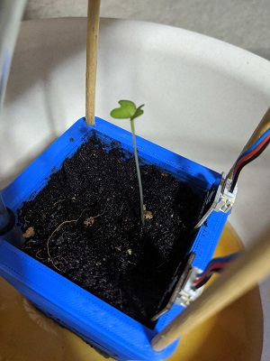
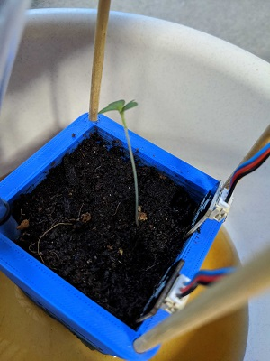
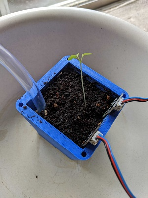
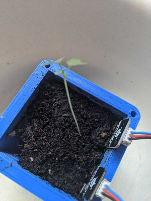
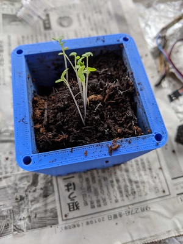

前期に作成したプランターで野菜が育つのか観察する
開始二日さっそく写真を撮影し忘れた。まだ何にも出てきていない

栽培三日目にして芽が出てきた。 しかし水をうまく制御できず土が湿ったまま







ここで画像を撮り忘れたが水のやりすぎで根腐りしたのか、芽が萎れた。
枯れた要因としてホースからの水の勢いが強く土が掘れてしまったことや水をうまく制御できなかったことがあげられる。

根腐りしたと思い、水やりや数値計測をしていなく放置していたら再び生えてきた。